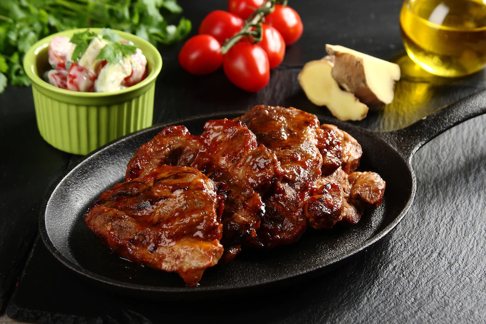

W dużej misce pomieszaj ketchup, który nada mięsu ostrego smaku, starty na drobnych oczkach imbir, miód, przyprawę do karkówki, ocet i sos sojowy. W powstałej marynacie wymieszaj pokrojoną w steki karkówkę. Mięso odstaw na co najmniej godzinę w chłodne miejsce.
Steki grilluj po ok. 10 minut z każdej strony na średnio rozgrzanym grillu do momentu aż będą miękkie i nie będzie z nich wypływała krew.
W miedzy czasie przygotuj sałatkę. Pomieszaj pokrojone w kostkę awokado z przekrojonymi na pół pomidorkami, posiekaną kolendrą i sosem czosnkowym Hellmann's, dzięki któremu sałatka stanie się kremowa, lekka i nabierze wyrazistego, czosnkowego smaku.